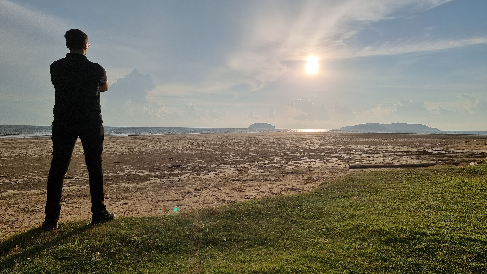

We don't just inspect power plants. We solve the fundamental equation of Dynamic Risk versus Operational Certainty.
LEAD ARCHITECT // FOUNDER
ID: ES-001
"For years, I watched the industry accept a 48% failure rate as 'unavoidable wear and tear'. I saw millions of dollars lost to vibration, erosion, and organizational silence.
I realized that standard maintenance wasn't enough. We needed a forensic approach. We needed to treat a hydropower plant not like a static building, but like a living organism with an immune system.
AnoHUB was born from that necessity. To build a protocol that doesn't just find problems, but predicts and neutralizes them before they exist."
We don't generalize. We specialize in the specific pathology of each machine type. Select an asset to verify our competence.
We don't guess. We measure. Using sub-surface NDT and 3D metrology, we provide data that holds up in a court of law.
Technology fails if people don't talk. Our protocols bridge the "Execution Gap" between engineering and management.
Our goal isn't just repair. It's to extend the operational life of assets beyond their original design limits.
Identification of the 48% dynamic failure gap in standard audits.
Development of the proprietary LCC Veto and NDT Matrix.
Establishing AnoHUB as the mandatory integrity benchmark.

Access the Engineering Immunity Protocol to see exactly how we execute this vision.
ENTER COMMAND CENTER